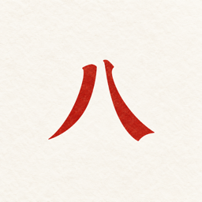

時來－八字
20 堂課，學會讀自己的八字・iPhone・繁體中文／English
已送 App Store 審核，尚未上架時來－八字是一套教你讀懂自己八字的課程 App。你不用先學會排盤，App 會把四柱算好，你專心學怎麼解讀。20 堂白話課從四柱、天干地支與五行講起，一路到十神、合與沖，最後跟著一張完整命盤讀一遍。
適合誰
- 從完全不懂到想讀懂自己八字的人。
- 不想先背排盤規則，只想學怎麼解讀的人。
- 看過命盤卻看不懂十神、五行關係的人。
- 想用中文或英文學八字的人。
課程內容
免費三堂
- 四柱命盤怎麼看
- 天干、地支與五行
- 找到日主，讀懂第一個關係
進階十七堂（會員）
- 出生時間與時區
- 節氣和月份分界
- 四柱如何排出
- 出生時間不確定時怎麼閱讀
- 十天干與陰陽
- 十二地支與藏干
- 五行生剋
- 日主與其他三柱
- 十神怎麼推導
- 十神五組各代表什麼
- 十神在不同柱位
- 天干相合
- 地支六合
- 地支六沖
- 跟著一張完整命盤讀一遍
- 比較出生資料造成的差異
- 查來源，建立研究筆記
主要功能
- 課後選擇題
- 每堂課後有選擇題，作答後立刻看到解說，答錯可以重試，不計分也不排名。
- 每日一題
- 用當天的天干對照你的日主出一題四選一，作答後才展開完整推導，並連到對應的課程。
- 命盤白話解讀
- 命盤頁用日常語言說明，不是一張術語表。
- 來源分三層
- 每一句都標明是古籍依據、白話解釋，還是本專案自撰。
- 筆記與複習
- 可以寫筆記，學過的內容會排進複習。
- 全球出生時區
- 支援世界各地的出生時區，繁體中文與英文隨時切換。
和一般命理 App 的差別
- 先教你讀：主體是 20 堂課，不是一張結論頁。
- 排盤交給 App，你專心學解讀。
- 每句話都標明出處層次。
- 不做擇日排序、不推薦時辰。
- 不需要帳號，出生資料只存在手機。
名詞小辭典
- 四柱
- 出生的年、月、日、時各成一柱，每柱由一個天干和一個地支組成。
- 天干與地支
- 天干有十個，地支有十二個，兩者配對記錄時間。
- 五行
- 木、火、土、金、水，以及它們之間相生相剋的關係。
- 日主
- 日柱的天干，代表命盤中的「自己」，解讀從這裡出發。
- 十神
- 以日主為中心，推導出其他天干和它的關係，共分五組十種。
- 合與沖
- 天干相合、地支六合與六沖，描述干支之間的互動。
免費與會員
免費：前 3 堂課程與命盤基本解讀。
會員：其餘 17 堂進階課、性格／感情／工作三個主題、十年大運、個人月報、多張命盤。台灣月方案 NT$120、年方案 NT$990，內容相同，自動續訂。
隱私
不需要帳號，資料只存在你的 iPhone，不上傳伺服器。
常見問題
- 有沒有適合初學者學八字的 App？
- 時來－八字是給零基礎的課程 App：排盤由 App 計算，20 堂白話課從四柱與五行講起，前 3 堂免費。
- 學八字一定要先會排盤嗎？
- 不用。App 會算好四柱，課程教的是怎麼讀；想了解排盤原理的人，進階課也有一堂專門說明四柱如何排出。
- 不知道出生時間可以學嗎？
- 可以。進階課有一堂專門講出生時間不確定時怎麼閱讀。
- 時來－八字是算命 App 嗎？
- 不是。它是學習怎麼讀八字的課程，不做擇日排序，也不構成醫療、法律或投資建議。
- 資料會上傳嗎？
- 不會。不需要帳號，出生資料在手機上計算並保存。
Shilai – Bazi — Learn to read your own Bazi chart
In App Store review. Shilai – Bazi is an iPhone course that teaches you to read your own Bazi (Four Pillars of Destiny) chart. You don't need to calculate anything: the app builds the four pillars, and you learn how to interpret them. Twenty plain-language lessons go from the four pillars, heavenly stems, earthly branches and the Five Phases to the Ten Gods, combinations and clashes, ending with a complete worked reading.
Who it is for
- Complete beginners who want to read their own Bazi chart.
- People who want to learn interpretation without memorising chart-calculation rules.
- Anyone who has seen a Four Pillars chart but can't follow the Ten Gods or Five Phases.
- Learners in English or Traditional Chinese.
What you learn
Three free lessons
- How to read the four pillars
- Stems, branches and the Five Phases
- Your Day Master's first relationship
Seventeen advanced lessons (members)
- Birth time and time zones
- Solar terms and month boundaries
- Following a chart calculation
- Reading with an unknown birth time
- The ten stems and polarity
- Branches and hidden stems
- Generation and control
- Reading from the Day Master
- Deriving the Ten Gods
- Understanding the five groups
- Relationships at different positions
- Stem combinations
- The six branch combinations
- The six branch clashes
- A complete worked reading
- Comparing input changes
- Sources, notes and review
Features
- Quizzes after each lesson
- Multiple-choice questions with an explanation right after you answer. Wrong answers can be retried; nothing is graded or ranked.
- Daily question
- A four-option question built from that day's heavenly stem against your Day Master. The full derivation opens after you answer and links to the matching lesson.
- Plain-language chart reading
- The chart page explains in everyday language rather than as a glossary.
- Three labelled layers
- Every line is marked as classical basis, plain-language explanation, or the project's own writing.
- Notes and review
- Take notes; studied material is scheduled for review.
- Worldwide time zones
- Birth time zones anywhere in the world; switch between Traditional Chinese and English.
How it differs from typical fortune apps
- A course first: twenty lessons, not a one-page verdict.
- The app does the calculation; you focus on interpretation.
- Every line shows which layer it comes from.
- No best-day rankings or recommended hours.
- No account; birth data stays on your phone.
Glossary
- Four Pillars
- Year, month, day and hour of birth, each written as one heavenly stem plus one earthly branch.
- Stems and branches
- Ten heavenly stems and twelve earthly branches, paired to record time.
- Five Phases
- Wood, Fire, Earth, Metal and Water, and how they generate and control each other.
- Day Master
- The heavenly stem of the day pillar, representing 'you' in the chart; interpretation starts here.
- Ten Gods
- The relationships of the other stems to the Day Master, in five groups of two.
- Combinations and clashes
- Stem combinations, the six branch combinations and the six branch clashes.
Free and membership
Free: The first three lessons and a basic chart reading.
Membership: The other seventeen advanced lessons, personality / relationships / work topics, ten-year luck cycles, a personal monthly report and multiple charts. In Taiwan NT$120 per month or NT$990 per year (same content), auto-renewing.
Privacy
No account. Your data stays on your iPhone and is not uploaded to a server.
FAQ
- What is a good app to learn Bazi (Four Pillars) as a beginner?
- Shilai – Bazi is a beginner course: the app builds your chart and twenty plain-language lessons teach you to read it. The first three lessons are free.
- Do I need to know how to calculate a Bazi chart?
- No. The app calculates the four pillars; an advanced lesson explains how the calculation works if you are curious.
- Can I learn without knowing my birth time?
- Yes. One advanced lesson covers reading a chart when the birth time is uncertain.
- Is it a fortune-telling app?
- No. It teaches you how to read Bazi. It does not rank days and is not medical, legal or financial advice.